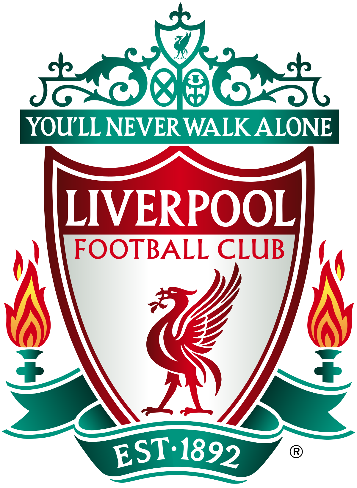

In soccer, there are both domestic (club) and international (country) teams. My favorite club team is Liverpool- a team based in the North of England. They've won six Champions League Titles in their history, third most amongst all clubs. Currently, Liverpool are in fourth place in the English Premier League, seeking to win their second title Premier League title.
For international teams, I don't exactly have a favorite. This is because the US team isn't the easiest to support (nobody really cares aobut soccer here), but I do have a few teams I've enjoyed watching over the years. I find France and Brazil to be my favorite teams to watch, because normally the most skilled players come from these countries. While they don't always go the farthest in the tournament, I always find myself hoping to see these teams do well. Brazil historically have been the best team ever. They have more world cups than any other country and have always had the best players in the world- specifically in their attack.
| Team Name | Champions League Titles |
|---|---|
| Real Madrid | 14 |
| AC Milan | 7 |
| Liverpool | 6 |
| Bayern Munich | 6 |
| Barcelona | 5 |